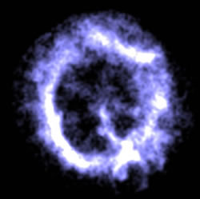
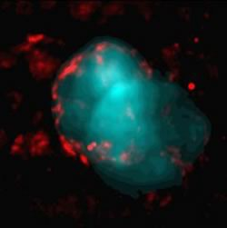

In the simplest formation scenario for a supernova remnant (SNR), the energy of the supernova explosion would be deposited equally in all directions and the SNR would be a uniform spherical shell. However, differing progenitor and explosion conditions, density variations in the interstellar medium and Rayleigh-Taylor instabilities result in 3 main types of SNR.
|
 |
Shell-type remnants As the name suggests, shell-type remnants emit most of their radiation from a shell of shocked material. We view this as a bright ring, since when we look at the edges of the three-dimensional shell, there is more shocked material along our line of sight than if we look elsewhere in the shell. This is known as limb brightening. |
| Crab-type remnants Alternatively named plerions, these remnants are named for the prototype – the famous Crab Nebula. They are powered by a pulsar located at their centre and, in constrast to shell-type remnants, they emit most of their radiation from within the expanding shell. This means that they appear as a filled region of emission rather than a ring of emission. |
|

IC433 is an example of a thermal composite remnant. In this image, blue corresponds to the X-ray emission and red the radio emission.
Credit: Jonathan Keohane |
Composite remnants These remnants are a cross between the other two remnant types, and appear either shell-like or Crab-like, depending on the wavelength of the observations. In general, thermal composites appear shell-like at radio wavelengths and Crab-like in X-rays, while plerionic composites appear Crab-like at both radio and X-ray wavelengths, but also show shell structures. |